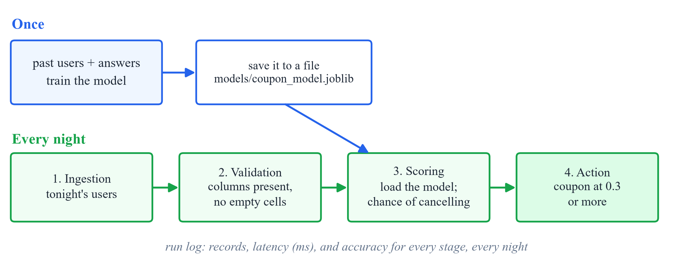
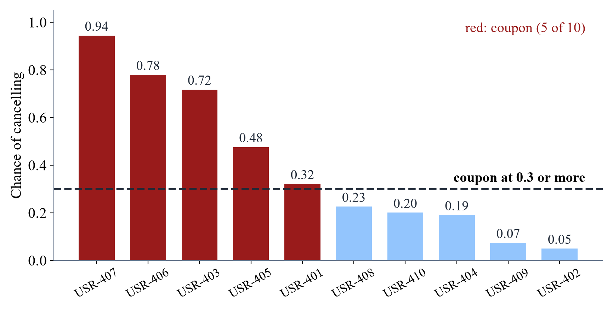
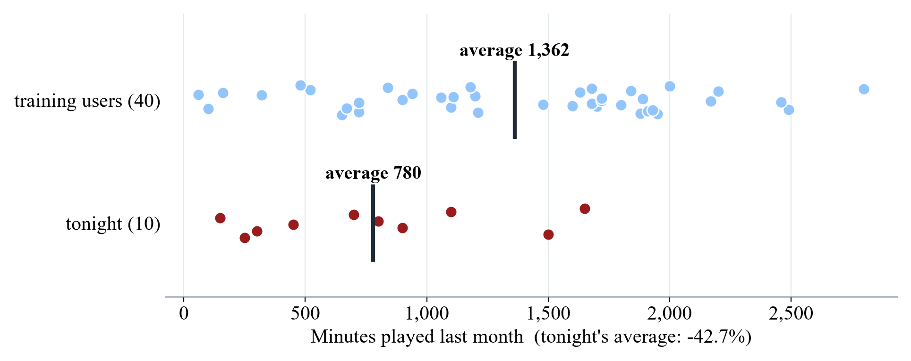
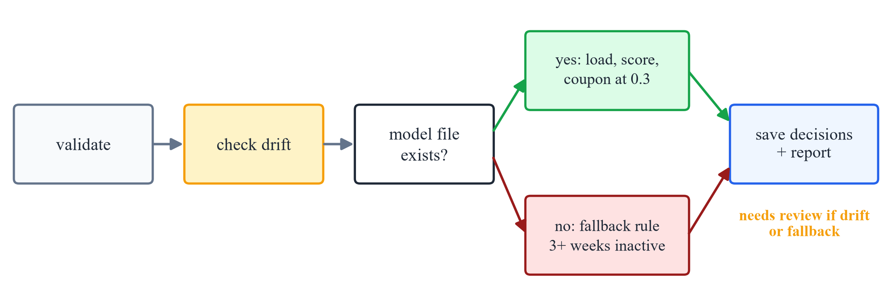

Today: the result first, then save, score, and check drift
| Tonight | Result |
|---|---|
| Users scored | 10 |
| Coupons (chance 0.3 or more) | 5 |
| Minutes vs training | -42.7%: drift flagged |
1. Train once, save with joblib, load and score every night.
2. Tonight's users listen 43% less: send the coupons, but flag the night for review.
3. No model file? Use the 3-weeks rule (Session 3.1) instead of crashing.

| Idea | Meaning | Today |
|---|---|---|
| Data drift | new data no longer looks like the training data | exam season: minutes fall |
| Monitoring | a run log: records, latency (ms), accuracy per night | Exercise 1 |
| Fallback | a simple, safe rule when the model cannot run | 3+ weeks inactive (Exercise 2) |
session_03_04_dataset.csv: the 40 users with answers from Session 3.4: train oncesession_04_01_new_batch.csv: 10 new users tonight, during final exams: no answerssession_04_01_dataset.csv: a run log, 5 nights x 4 stages, for Exercise 1joblib comes with Scikit-Learn: nothing new to install. Step 1 creates a models/ folder.# 1. Input: all 40 users with known answers (Session 3.4) import os import joblib import pandas as pd from sklearn.linear_model import LogisticRegression from sklearn.pipeline import make_pipeline from sklearn.preprocessing import StandardScaler train = pd.read_csv("data/session_03_04_dataset.csv", index_col="User_ID") features = ["Weeks_Inactive_Count", "Monthly_Minutes_Count"] # 2. Process: train once on every user, then save the trained model to a file model = make_pipeline(StandardScaler(), LogisticRegression()) model.fit(train[features], train["Cancelled_Binary"]) os.makedirs("models", exist_ok=True) joblib.dump(model, "models/coupon_model.joblib") # 3. Output: where the model went, and how it does on its own training users accuracy = model.score(train[features], train["Cancelled_Binary"]) print("Saved: models/coupon_model.joblib") print(f"Training accuracy: {accuracy:.2f}")
joblib.dump(model, path) saves the scaler and the classifier togetherQuick Check: os.path.exists(...) prints True
0.90 is optimistic: the honest test was in Session 3.4# 1. Input: the saved model and tonight's new users import joblib import pandas as pd model = joblib.load("models/coupon_model.joblib") tonight = pd.read_csv("data/session_04_01_new_batch.csv", index_col="User_ID") features = ["Weeks_Inactive_Count", "Monthly_Minutes_Count"] # 2. Process: score every user, then apply the threshold chosen in Session 3.4 chance = model.predict_proba(tonight[features])[:, 1] tonight["Chance"] = chance.round(2) tonight["Coupon"] = (chance >= 0.3).astype(int) tonight.to_csv("data/coupons_tonight.csv") # 3. Output: tonight's decisions print(tonight[["Chance", "Coupon"]]) print("Coupons to send:", tonight["Coupon"].sum(), "of", len(tonight))
joblib.load(path): the trained pipeline, no training data needed0.3 or more (Session 3.4); .to_csv() is the actionQuick Check: chance.sum(): about 4.0 cancellations expected

USR-407 is the clearest case (0.94)USR-401: only 2 weeks inactive, but just 250 minutes: couponUSR-410: 3 weeks inactive, but 1,650 minutes: no coupon| Batch | Real-time | |
|---|---|---|
| When | on a schedule, e.g., every night | on each request, in milliseconds |
| Example | tonight's coupons | a song recommendation while the user waits |
| Cost | cheaper | more expensive to build and run |
# 1. Input: the training users and tonight's users import pandas as pd train = pd.read_csv("data/session_03_04_dataset.csv", index_col="User_ID") tonight = pd.read_csv("data/session_04_01_new_batch.csv", index_col="User_ID") features = ["Weeks_Inactive_Count", "Monthly_Minutes_Count"] # 2. Process: compare each feature's average tonight with its training average drift = pd.DataFrame({"Train_Avg": train[features].mean(), "Tonight_Avg": tonight[features].mean()}) change = drift["Tonight_Avg"] - drift["Train_Avg"] drift["Change_Pct"] = change / drift["Train_Avg"] * 100 drift["Drift_Flag"] = drift["Change_Pct"].abs() > 20 # 3. Output: the averages, the change in percent, and the flag print(drift.round(1))
.abs() > 20 flags a large drop or riseQuick Check: > 5 flags both features

-5.7%), minutes fell 42.7%. The model learned that low minutes mean "about to leave": this week, that may not be true. Flag the night for review.| Run_Date | Pipeline_Stage | Records_Count | Latency_Ms | Model_Accuracy |
|---|---|---|---|---|
| 2026-12-07 | Ingestion | 52000 | 350 | |
| 2026-12-07 | Validation | 51880 | 180 | |
| 2026-12-07 | Scoring | 51880 | 820 | 0.912 |
| 2026-12-07 | Action | 2100 | 120 |

Goal: find the nights that need attention
Script: YourName_S41_monitoring.py
900 ms or accuracy below 0.882026-12-10 and 2026-12-11; latency 1470 to 1730 msGoal: keep the nightly job running when the model file is missing
Script: YourName_S41_fallback.py
FileNotFoundError: ask the AI Chat how to check firstif os.path.exists(model_path): model; otherwise the 3-weeks rule of Session 3.1USR-401 and wastes one on USR-410Goal: validate, check drift, score or fall back, save, and report in one function
Script: YourName_S41_nightly.py
run_nightly(batch_path, model_path, train_path) returns a summary dictionaryneeds_review is True if anything drifted or the fallback was usedMonthly_Minutes_Count, needs_review: True